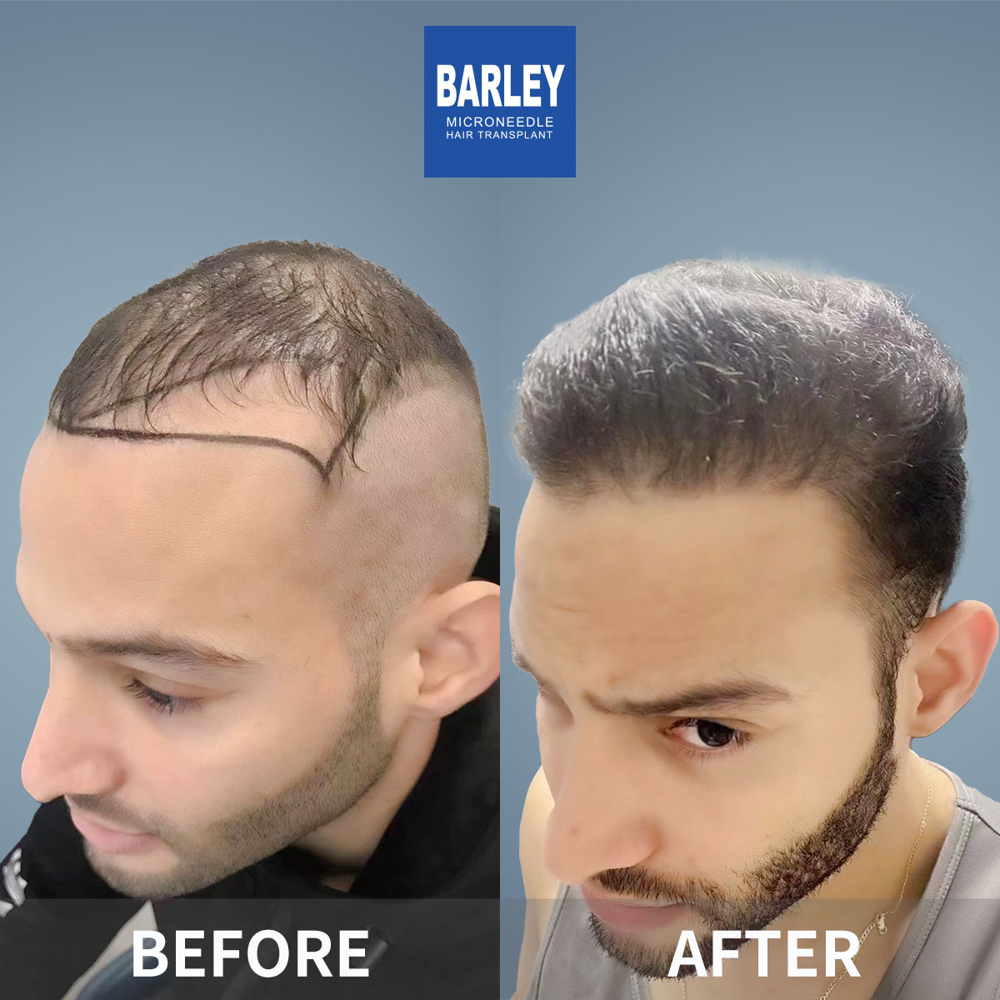
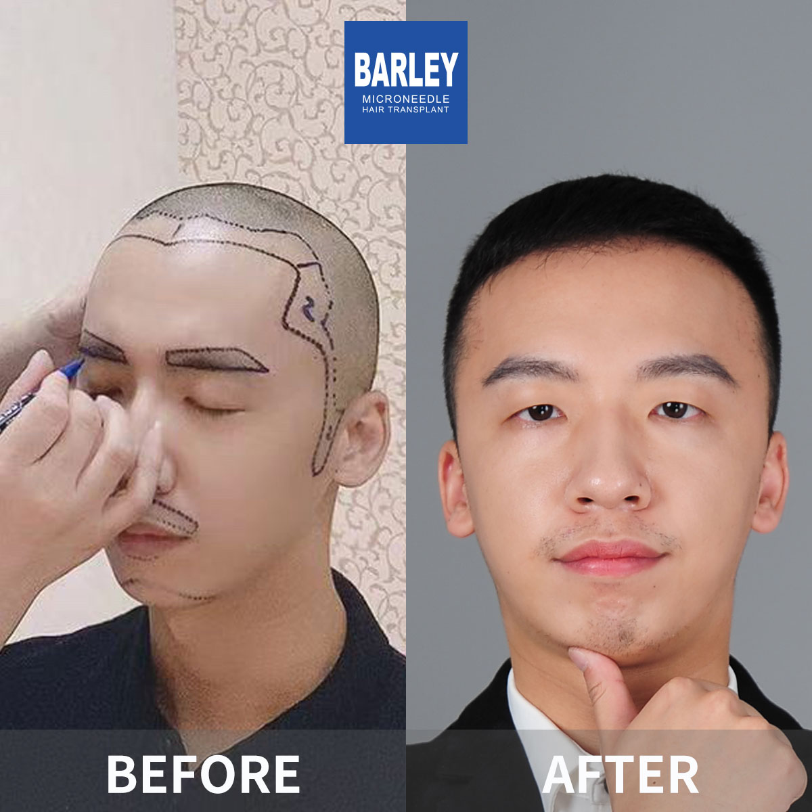
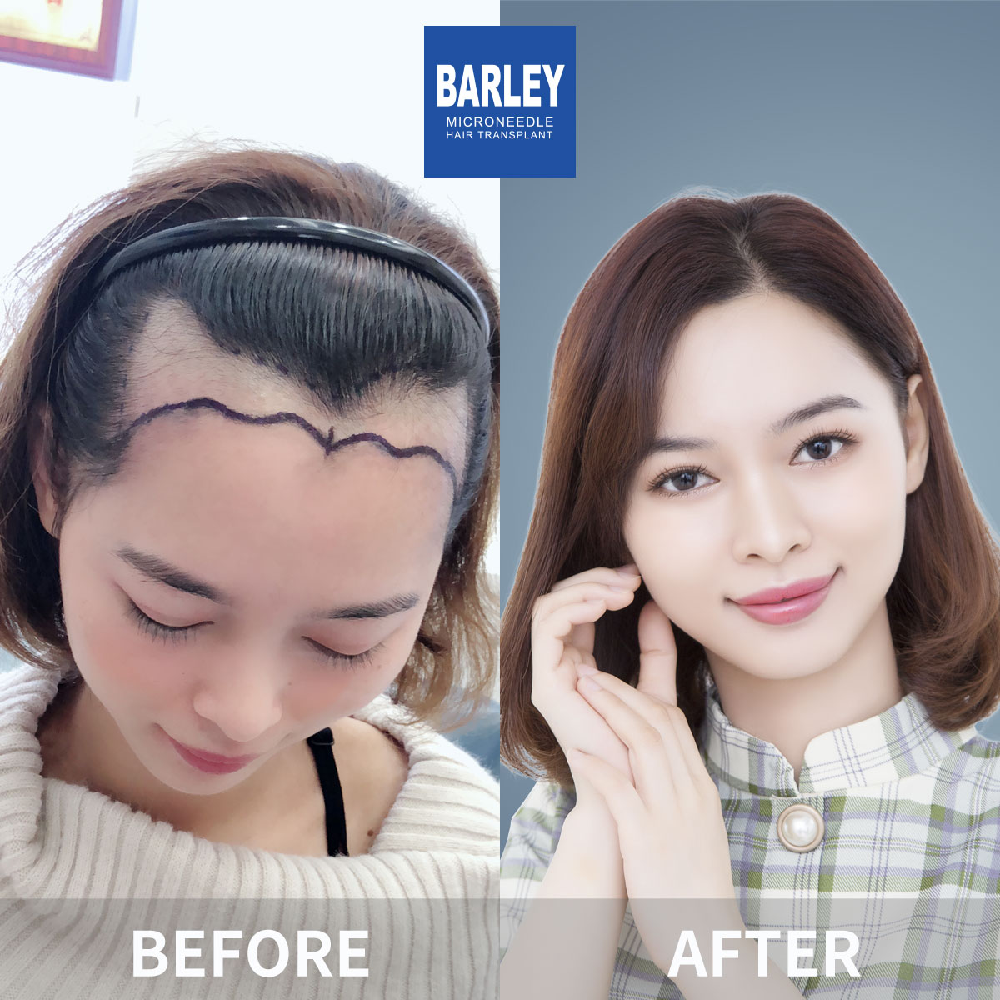
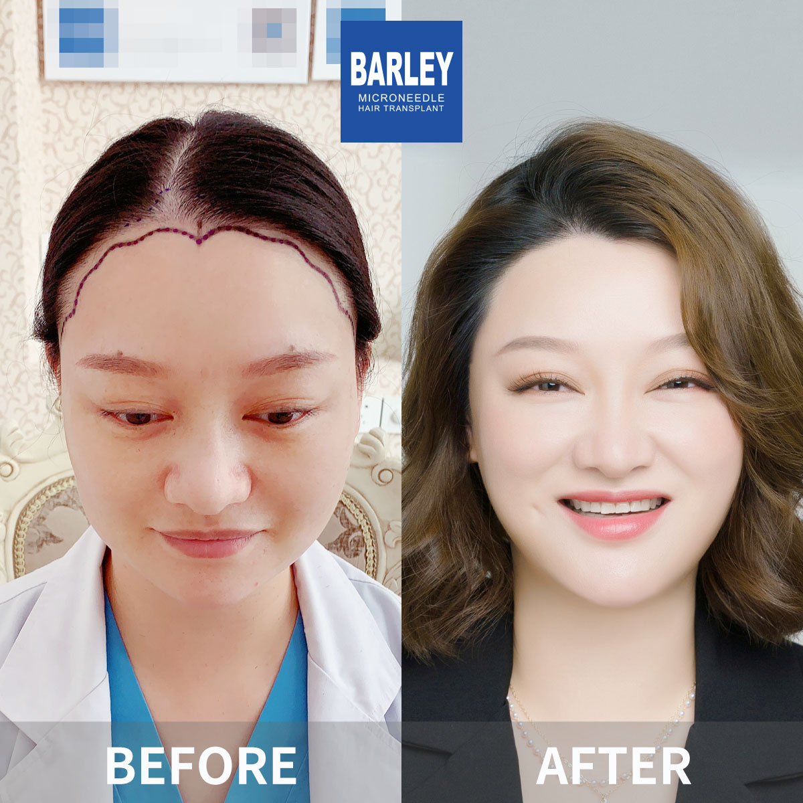

Browse over 100 authentic patient cases and find results that match your own hair loss pattern














The impact of over 18 years of clinical excellence in hair restoration
Every transformation tells the story of a patient who took back control of their confidence
Every image in this gallery belongs to a real Barley patient. No stock photography, no digital retouching, no camera tricks — just honest before-and-after documentation you can trust.
Each hairline is custom-designed to complement the patient's face shape, age, and ethnic features. Single-hair grafts at the frontal edge create a soft, irregular pattern that looks completely natural.
Carefully harvested healthy follicles, processed under cold-chain conditions and implanted with precision. The result: uniformly thick growth that lasts a lifetime — typically from a single procedure.
Patented technology and decades of expertise that deliver consistently superior outcomes
Micro-incisions mean less trauma, faster recovery, and a more natural finish
Cold-chain preservation ensures nearly every transplanted follicle takes root
Each graft placed at the exact angle and direction of natural hair growth
Nearly two decades of proven results you can verify in our gallery
Real patients, real transformations — captured after their procedures

Posing with our medical team after successful procedure

Celebrating fantastic results with our doctors

Another satisfied patient shares their joy

Patient with our specialist before discharge

Happy patient with Dr. Chen post-treatment

Excited patient showing their new look

Patient delighted with their transformation

Patient starting fresh with amazing results
Hear from our satisfied patients around the world
"I spent weeks comparing case galleries across four clinics before choosing Barley. What sold me was the side-by-side photo consistency — same lighting, same angles, no obvious Photoshop. My own 12-month results look exactly like the cases I studied here, and my barber still hasn't figured out I had work done."
"I showed the women's thinning cases on this page to three of my closest friends before making the appointment. None of them could believe these were actual transplants — the density looked so natural. Now I'm 10 months post-op and none of my coworkers have noticed anything different except that I seem to be wearing my hair down more often."
"The before photo in the Norwood 6 baldness category looked exactly like my head. I printed it and brought it to my consultation. Fifteen months later, my after photo could easily replace that case in the gallery. The density match is unreal, and when I showed my old roommate a side-by-side he thought I was showing two different people."
"What I love most about this gallery is that you can actually zoom in and study the hairlines. I did that for hours with the men's hairline cases. When my own front edge grew in, I compared it to photo #14 of the hairline series and the softness, the little irregular zigzags, the single-hair placement — it's identical. Absolute artistry."
"I've been going to the same barber for eight years. I showed him case #21 from the hairline section as reference and told him I was thinking about a transplant. Six months later I went back for a cut and he kept complimenting my hairline, saying whoever did the work matched that reference photo perfectly. He genuinely thought I was still showing him someone else's result."
"The beard cases here were the reason I booked. I had one cheek that basically never grew hair. I compared every before-and-after in the beard section and the consistency of the blending is what convinced me. Now 14 months out, my beard connects perfectly and I've stopped using fillers — nobody from my old life can tell where the transplant ends and my natural beard starts."
Experience our modern and comfortable facilities

Private and professional

Comfortable post-op space

Welcoming entrance

Our state-of-the-art facility

Relax in our premium lounge

Sterile and advanced
Answers about our before-and-after case gallery
Click to copy contact information
15810155700
+86 13730143529
hairtransplant@qq.com

Everyone's hair loss journey and solution are unique due to a variety of factors. Our hair restoration experts will assist you in determining the root cause and the best solution for your hair restoration plan. If you have any questions, please ask; we are happy to assist.